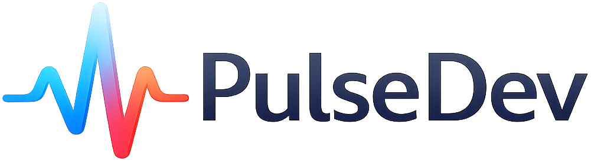
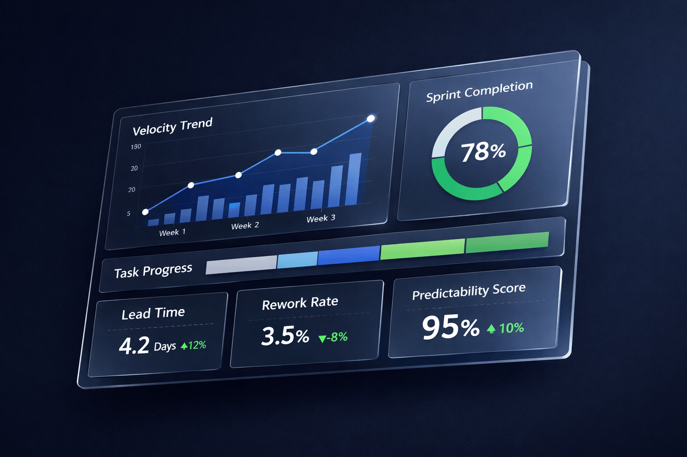
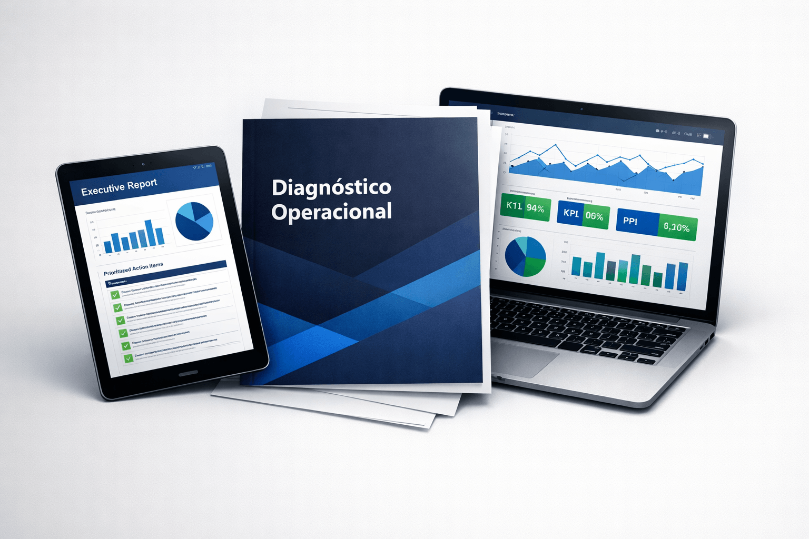

A PulseDev lê o pulso da sua operação de engenharia, identifica gargalos invisíveis e implementa melhorias práticas para aumentar qualidade, previsibilidade e produtividade — sem burocratizar a entrega.
Sem compromisso. Conversa de 30 minutos com retorno rápido.

{{ pain.description }}
Quando esses sinais aparecem, o problema raramente é o time. É o ritmo e a estrutura da operação.
A PulseDev atua junto à liderança e ao time para identificar onde a engenharia perde eficiência e implementar ajustes práticos no fluxo de trabalho, na comunicação técnica e na execução.
O foco não é adicionar processo. É devolver cadência saudável ao time.
{{ step.description }}
Cada etapa é adaptada ao estágio do time, à pressão do negócio e à estrutura atual da operação.
Não entrego slides genéricos. Entrego documentos práticos, adaptados ao seu contexto, que a liderança pode usar no dia seguinte.

{{ audience.description }}
Se sua engenharia já tem produto rodando, backlog vivo e pressão por entrega, mas a operação ainda não está onde deveria — esse programa é para você.
{{ diff.description }}
{{ faq.answer }}
Uma conversa de 30 minutos para entender seu cenário e identificar onde a operação pode melhorar. Sem compromisso, sem pitch — apenas uma leitura inicial.
Retorno rápido. A maioria das respostas acontece em poucas horas.